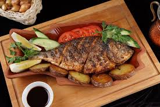

Наши рецепты
-
 Кабачки Готовятся очень просто, вам всего лишь нужно взять и приготовить. 15 мин Франция
Кабачки Готовятся очень просто, вам всего лишь нужно взять и приготовить. 15 мин Франция -
.jpg) Лиса-овсянка Обстрегите лису, покрошите в овсянку, и у вас... 5 мин Норвегия
Лиса-овсянка Обстрегите лису, покрошите в овсянку, и у вас... 5 мин Норвегия -
.jpg) Картошка с нейро-рыбой Чтоб сделать, нужно только да и только... 40 мин Индия
Картошка с нейро-рыбой Чтоб сделать, нужно только да и только... 40 мин Индия -
.jpg) Пицца на сковороде Не хочется мыть сковородку после завтрака? 105 мин Италия
Пицца на сковороде Не хочется мыть сковородку после завтрака? 105 мин Италия -
.jpg) Самса из чайки Список небольшой: 1) Наловите ведро птиц... 70 мин Бразлия
Самса из чайки Список небольшой: 1) Наловите ведро птиц... 70 мин Бразлия -
.jpg) Греческий пирожок Греция предлагает получить незабываемый... 45 мин Греция
Греческий пирожок Греция предлагает получить незабываемый... 45 мин Греция -

Рыба-капитан Когда в последний раз вы играли в русскую рыбалку? 60 мин Россия -
.jpg) Дети котлет Любите ягнят? Я нет, но для тех кто любит, мы подготовили... 40 мин США
Дети котлет Любите ягнят? Я нет, но для тех кто любит, мы подготовили... 40 мин США -
.jpg) Армия пельменей Сколько вы можете съесть за раз? Можете не... 180 мин Россия
Армия пельменей Сколько вы можете съесть за раз? Можете не... 180 мин Россия -
.jpg) Салат "Два яйца" Не знаете что делать с яйцами в холодильнике? :P 15 мин Литва
Салат "Два яйца" Не знаете что делать с яйцами в холодильнике? :P 15 мин Литва -
.jpg) Рыцарская похлебка 16 перцев выросло на огороде, Милорд! 20 мин Швеция
Рыцарская похлебка 16 перцев выросло на огороде, Милорд! 20 мин Швеция -
.jpg) Двойной рыб Рыба-капитан уже надоела? Или вы её недоели? Вам поможет двойной рыб! 8 мин Эстония
Двойной рыб Рыба-капитан уже надоела? Или вы её недоели? Вам поможет двойной рыб! 8 мин Эстония